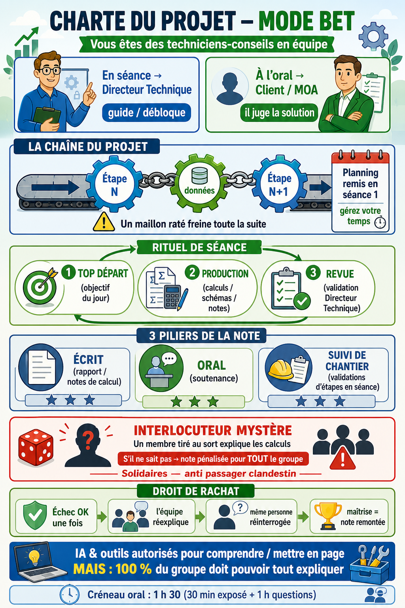

IUT Mantes-en-Yvelines · GC-CD
Laboratoires virtuels & infographies
Choisissez d’abord votre semestre. Vous y trouverez le laboratoire interactif, les infographies et, lorsqu’elles existent, les vidéos de cours.
Site public pédagogique : pas de sujets notés, pas de corrigés, pas de chiffres des dossiers. Les QCM des labs sont formatifs (mission fictive).
S1 · 1re année
Semestre 1
Méthode de travail, réseaux, métrologie
3 ressources : R 1-1, R 1-10, R 1-13
Entrer dans le semestre →S2 · 1re année
Semestre 2
Transferts thermiques et hydriques
1 ressource : R 2-9
Entrer dans le semestre →S3 · 2e année
Semestre 3
Physique et énergétique du bâtiment 1
1 ressource : R 3-10
Entrer dans le semestre →S4 · 2e année
Semestre 4
Physique et énergétique du bâtiment 2
1 ressource : R 4-8
Entrer dans le semestre →Charte du projet - déroulé des séances
Rôles, rituel de séance, note, interlocuteur mystère et usage de l’IA. À lire avant de commencer un projet.
Lire la charte